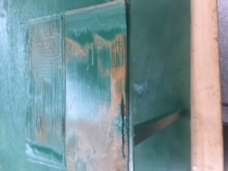
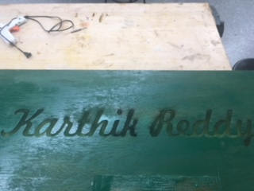
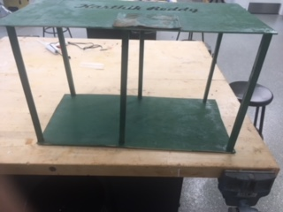

For my final project I made a table that can be ablso used as a shelf to hold my books and stuff for school. The four projects used during for the final project are Design, 3D printing, Laser Cutting, and Woodworking.
The devices used for the project were the laser cutter, the 3D printers, and the wood saws. For the wood cutter, I used the machine with the 1/8 wood seeting, and I used the standered setting with the smartextruder + setting when saving the file for the 3D printer, and there was no general setting for the wood saws. It took me about two classes and a couple hours over the weekend to finish the project. I learned from this project were how to use the different wood saws and wood-working tools in the WIC.
The materials used are wood, the materials used in the 3D printer, and the paint I used to paint the final piece.
The process of making the Final Project
First aspect is the design part, and I did this by first making a CorrelDraw file that would engrave my name in the laser cutter. The next file is when I wanted to make a platform to have a coaster like function for a cup or any other small object, so I made it with on Autodesk which I put into Makerbot print and then put the job into the machine.
The next aspect of the project was the laser cutting, and I did this putting a blank piece of wood that had the correct dimensions, and then I focused the laser cutter then I put the job into the computer connected to machine then started the job and waited for the machine to laser cut my name into the wood which I sprayed after the job finished.
The next aspect was the 3D printer. This aspect is a matter of saving the makerbot print file onto a flash drive then putting it into a 3D printer, and waiting for the job to be done. Then I spraypainted the 3D design green after it came out then I hot glued to the top of the table below the engraving of my name.
The last aspect is woodworking. This aspect is that I put the large but thin piece of wood with my name engraving on the top then I had 6 collumn like pieces of wood with the same dimensions. I glued the pieces as a way to connect the two platforms of wood. the platform with the name engraving should be on top with the name being on the top of the table/shelf. Then I spraypainted the rest of the project that was not painted before, and let it dry.
  